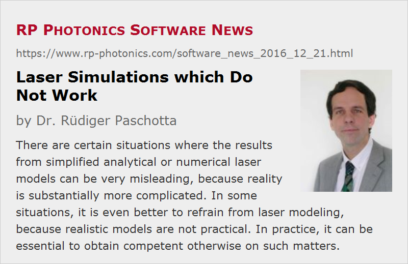

Laser Simulations which Do Not Work
Posted on 2016-12-21 in the RP Photonics Software News (available as e-mail newsletter!)
Permanent link: https://www.rp-photonics.com/software_news_2016_12_21.html
Author: Dr. Rüdiger Paschotta, RP Photonics Consulting GmbH
Abstract: There are certain situations where the results from simplified analytical or numerical laser models can be very misleading, because reality is substantially more complicated. In some situations, it is even better to refrain from laser modeling, because realistic models are not practical. In practice, it can be essential to obtain competent otherwise on such matters.

There is a wide range of phenomena occurring in lasers which can well be simulated with suitable software. However, there are also cases where it is surprisingly difficult to obtain correct results. And in some of those it is not even obvious that a simple simulation approach delivers unrealistic results. Here, I give you an example for such a situation. I have recently been asked to set up a simulation for the pulse dynamics of a lamp-pumped high-energy laser. At first glance, this looked pretty straightforward. However, I soon realized an enormous difficulty:
Complicated Mode Dynamics
In order to efficiently extract a high energy, the beam area in the laser crystal must be pretty large. On the other hand, the laser resonator needs to be short in order to obtain short pulses. In that situation, it is impossible to design the laser for operation with high beam quality: the resonator mode size in the crystal must be far smaller than the transverse size of the crystal, so that you obtain operation on many transverse resonator modes. Now you may not care that much about beam quality, and why should that detail be so important for the simulation of the dynamics?
The first part of the problem is that the transverse modes have different overlap with the pumped area of the crystal, thus also different laser gain. In our case, that detail was particularly important because we were looking at a free-running laser, which starts the generation of a pulse as soon as the net gain per resonator round-trip is slightly positive. That condition may be fulfilled for some modes, but not for others; typically, a few modes will start to gain increasing power, but with substantially different growth rates due to different gains.
Then comes the next problem: we will get gain saturation primarily by those strong modes, and that saturation affects primarily those modes themselves and only to a smaller extent other modes, having substantially different transverse intensity profiles. So the power growth of the originally lasing modes will go down, and others will gradually get more power. Overall, we get a complicated interplay of many modes which partially compete for the laser gain. These complicated dynamics will also influence the evolution of the total optical power in all modes.
The real behavior of the laser will not be properly described by a simplified model, which in the extreme (but often used) case has only a single dynamical variable for the excitation of laser-active ions in the crystal, and the intracavity optical power as the second dynamical variable.
Can a More Sophisticated Model Help?
To be more realistic, one would have to differentiate between the powers of many lasing modes and also the excitation densities at many different positions in the crystal. Such a model would be far more complex and would require far more computation time. In addition, one should be aware that the detailed evolution of the system will also be quite sensitive to effects like thermal lensing, gain guiding and interferences between different modes. It is hard to estimate how severe such influences will really be in a concrete case. It is pretty clear, however, that even a quite complex computer model could not simply be trusted to deliver correct (realistic) results. In principle, one may use the Fox-and-Li approach, i.e., just numerically propagating a wave through the crystal many times, taking into account various influences on that wave. Possibly, one would even have to use multiple waves with slightly different optical frequencies. Even without that, the computation would be extremely slow, since the simulation of each round trip takes significant time, and typically one needs to simulate many round trips, particularly for free-running lasers.
Avoid Modeling in Some Cases!
So this is one of the cases where an experienced expert should tell the customer that numerical modeling is unfortunately not practical, and other solutions must be used. This is what I did. The customer was probably not entirely happy, but should nevertheless have been glad to get that warning in time, before substantial resources were wasted.
Note that many people would not be aware of such difficulties and may thus put together a computer model, not knowing that the results will be unreliable. This demonstrates once more that in practice one should not only have powerful software but also technical support from somebody experienced, who can warn you about such problems. (Software alone would usually not give you such warnings!) Otherwise, you may waste a lot of time, first for setting up a model producing unreliable results and later on when being misled by those results. It is easy to imagine how damaging that could be for some development project.
Fortunately, simplified models are quite reliable in many other cases. So one should certainly not draw the conclusion that it is better refrain from modeling entirely. Instead, one just needs to find out where it is practical and helpful and where it is not. If you get competent technical support, you can work safely even if your own expertise is limited.
This article is a posting of the RP Photonics Software News, authored by Dr. Rüdiger Paschotta. You may link to this page, because its location is permanent.
Note that you can also receive the articles in the form of a newsletter or with an RSS feed.
|  |
If you like this article, share it with your friends and colleagues, e.g. via social media:
These sharing buttons are implemented in a privacy-friendly way!